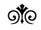

Althusser, Lacan, Anti-lacan ve Marksizm

Althusser psikanalizle ilk kez felsefe alanında karşılaştı ve Politzer, Sartre, Merleau-Ponty gibi filozofları okuyarak bu disipline ilgi duymaya başladı. Marksist düşünüre göre bu filozoflarla psikanalistler arasında garip bir ilişki vardı: Onlar Freud ve izleyicilerine, kabaca ve bir çeşit bilimsel alışveriş esprisi içinde, “siz bize pratiğinizi verin; biz de sizin statünüzü belirleyelim ve size yoksun olduğunuz kavramları sağlayalım!” demişlerdi.123 Sartre ve Alman psikiyatrı Biswanger bununla da kalmamış, bir de “felsefi psikanaliz” geliştirmişlerdi. Bu felsefi psikanalizde toplumsal-biyolojik ilişkisi, yani toplumsallığın temelini biyolojiye dayandıran görüş, felsefi karşılığını buluyor ve “birlikte öznellik” ya da “birlikte varolmak” (intersubjectivité, Mit-sein) gibi kavramlarla ifade ediliyordu. Bu öznel beraberlik psikanalizdeki hasta-hekim ilişkisinin felsefi ifadesinden başka bir şey değildi ve ilhamını Politzer’den almıştı.124
Althusser felsefeden gelen ve psikanalizin anlamını değiştiren bu müdahaleyi, daha sonraları “şiddetli” bir sözcükle ifade etmiş ve “sahtecilik” olarak nitelemiştir (s. 58). Bu “sahtecilik” sayesinde Fransa’da psikanaliz kendine özgü “bilimsel” alandan uzaklaşıyor ve idealist felsefenin spekülasyon konuları arasına giriyordu.
Bu dönüşüm nasıl gerçekleşmişti?
Althusser’e göre bu dönüşümde “tayin edici” rolü, temel kavramı (“intersubjectivité”yi) sağlayan Politzer oynamıştı. Çünkü, Politzer, “dram” kavramını “efendi-köle ilişkisini anımsatan bir konumda”, birlikte öznellik (intersubjectivité) şeklinde düşünmüş ve önermişti (s. 59). İşte burada Althusser’in (1960’lardaki) temel teziyle karşılaşıyoruz: Psikanalizi bu felsefi tartışmalardan kurtaran ve ona bilimsel bir statü sağlayan Dr. Jacques Lacan olmuştur.
* * *
Dr. Lacan 1960’ların başında kuşkusuz bilinmeyen bir isim değildi. Fakat onu kimse anlamıyor, daha çok da garip kişiliğiyle ve her çarşamba yapılan, “her çeşit insanın kendileri için anlaşılmaz bir söylemi dua gibi dinlediği” seminerleriyle dikkati çekiyordu (s. 68). Bu öfkeli adam öğrencilerine bağırıp çağırıyor, ağır hakaretler yağdırıyor, açıklamalarından hiçbir şey anlamadıklarını söylüyor ve bunu onlara da kabul ettiriyordu. Althusser’in kendisi bu dinleyiciler arasında bulunmamıştı; fakat olup bitenleri yakından izlemekten de geri kalmıyordu. Nitekim sonunda Usta’yı anladı ve anlayınca da kafasında tüm bu kükremelerin, bu bağırıp çağırmaların, bu küfürlerin anlamı değişti: Aslında Dr. Lacan’ın söyledikleri son derece basit ve anlaşılır şeylerdi. Fakat bunları söyleyebilmek için rol yapmak, maske değiştirmek zorundaydı; kendisini anlattıklarını anlaşılmaz şeyler gibi göstermeye, “entelektüel terör” yapmaya zorlayan haklı nedenler vardı.
Bu nedenler nelerdi?
Lacan’ın saldırgan tonunun başlıca nedeni, Althusser’e göre “bizzat dönemin psikanalitik ortamının kendisiydi”. O ortamda, psikanaliz hakkında, bu disiplinin “hukuki, sosyal ve ekonomik yapıları”nın, yani lonca çıkarlarının dışında teorik tavır almak ve psikanalizi hak ettiği bilimsel nesneye kavuşturmak için “teorik sahtecilik”ten başka bir yol yoktu. Son derece basit ve anlaşılır şeyleri kimsenin anlayamayacağı bir dille anlatan, sonra da “beni anlamıyorsunuz!” diye onlara hakaret eden Lacan’ın yaptığı da buydu (s. 68). Bunun dışında, Lacan, yine aynı amaçla, fakat “kendi bilimsel girişimine tamamen yabancı bir şekilde”, dolaylı araçlar kullanıyor ve psikanaliz loncasının baskısı altında doğrudan söyleyemediği bazı şeyleri Hegel, Heidegger gibi filozofların manevi otoritesine sığınarak söylemeye çalışıyordu.
Aslında Lacan “teorik katkısı ölçüsünde kararlı ve bilinçli” bir tutumla mevcut psikanalitik uygulamaya “radikal bir yadsıma” getiriyordu ve bu “yadsıma”, Politzer’de olduğu gibi sadece eleştirel değil, bir de yapıcı taraf içeriyordu. Eleştirel taraf, psikanalizi mekanist bir yaklaşımla psikoloji, biyoloji, fizyoloji, nöroloji gibi insan bilimlerine, ya da hümanizm, personalizm, egzistansiyalizm gibi idealist felsefelere bağlayan mevcut durumu yadsımasıydı. Pozitif taraf ise şuradaydı: Lacan bizlere, Freud’un eseri hakkında yapılmış (başta kızı Anna Freud’unki olmak üzere) yanlış yorum ve “katkı”ları bir tarafa atarak kaynağa, yani Freud’un eserlerine dönmeyi öneriyor ve bu konuda öncü oluyordu. Lacan’ın Freud’u “okuma”sı şunu ortaya koymuştu: Freud, “ithal kavram”larla da olsa yeni bir bilim kurmuştu ve bu yeni bilimin konusu (“nesne”si) bilinçaltı idi. Bununla bize Freud, “psikanalizin tutarlı, kesin, geçerli bir tanımının mümkün olduğunu” gösteriyordu. Bu teorik katkı bilim tarihinde, Eski Yunan’da matematiğin, XVII. yüzyılda Galile fiziğinin ve XIX. yüzyılda da tarihi maddeciliğin (Althusser daha sonra bunu “tarih bilimi” olarak adlandıracaktır) kurulması kadar önemliydi (s. 71-72).
Bu katkıyı, Althusser, ünlü Freud ve Lacan başlıklı makalesinde açıklamıştır.
* * *
Althusser, Freud ve Lacan başlıklı makalesini yazmadan önce Ecole Normale’de (ENS) bu konuda çok açıklayıcı bir konferans daha vermişti. Düşünürümüz bu konferansında da geniş bir parantez açarak psikoloji ve felsefenin sübjektivist bir yaklaşımla ve ortak kavramlarla nasıl Freud’un asıl bulgusunun (“bilinçaltı bilimi”nin) yolunu tıkadığını anlatmıştır.
Freud psikanalizi kurarken felsefe ve klasik psikolojiye özgü “ruhsallık”ın (“psişizm”in) tanımını değiştirmiş ve bilimsel temeli hazırlamıştı. Zaten kendisi de “ancak tanımı değiştirildikten sonra psişizmin tutarlı ve bütünsel bir kuramının yapılabilmiş olması bir rastlantı mıdır?” diye soruyordu (s. 75).125 Bu değişiklik Freud’un öğretisinin mevcut “psikoloji bilimi”ni dışlaması şeklinde somutlaşmıştı ve Lacan da aynı şeyi söylüyordu: “Freud’un doktrininin bir psikoloji olduğunu söylemek kaba bir fikir karışıklığıdır”.126
Freud’un kuramlarının, ortodoks “okuma”ların aksine, ona en yakın görünen psikolojiden koparılarak ona en uzak görünen sosyoloji ve etnoloji gibi disiplinlere bağlanması kolay anlaşılır bir şey değildi ve büyük bir dirençle karşılaşmıştır. Althusser, Aydınlanma çağında “doğadan kültüre” ya da bilimsel terimlerle “biyolojiden psikolojiye” geçmek şeklinde ifade edilen bu yanılgıyı, aynı yüzyıl düşünürlerini çok işgal eden “vahşi çocuklar”a uygulanan pedagojiyle sergilemiştir.
* * *
XVIII. yüzyılda ve XIX. yüzyıl başlarında ormanlarda ele geçirilen, hayvanlar arasında yaşamış ve büyümüş “vahşi çocuklar” (“kurt çocuklar”, “ayı çocuklar” vb.) büyük bir ilgi konusuydu. Bu ilgiyi “bilimi ilerletmek kaygılarıyla” devlet de paylaşmış ve bazı doktorları bu konuda raporlar hazırlamakla görevlendirmişti. Bunlardan Aveyron’da bulunmuş bir vahşi çocuğu inceleyen Dr. İtard’ın raporu bu gibi çocukları eğitmekteki başarısızlığı anlatıyor ve bunun nedenlerini sorguluyordu.
Bu dönemde “vahşi çocuk”larda saptanan dikkate değer özellikler şunlardı: 1) Bu çocuklar hayvanlar gibi “dört ayaklı” idiler; 2) asla konuşmayı öğrenemiyorlardı; 3) hiçbir cinsel arzu duymuyorlardı; 4) bir aynada kendilerini tanıyamıyorlardı; 5) gülmesini bilmiyorlardı (s. 83).127
Bu çocukları eğitmekteki başarısızlığın nedenleri nelerdi?
Bu başarısızlığın temel nedeni, en saf ifadesini Condillac pedagojisinde bulan epistemolojik bir hataydı. Bu pedagoji insan psikolojisini biyolojik ihtiyaçların kesintisiz bir devamı olarak algılıyor ve eğitimi de bu ilkeye dayandırıyordu. Daha açık bir ifadeyle insanın biyolojik yapısı psişik yapısını da belirliyordu. Ne var ki bu eğitim felsefesi belirli biyolojik ihtiyaçlar bağlamında tanımladığı “doğa halindeki insan”ın gerçekte “kültürel insan” olduğunun farkında değildi. Yani durum ters yöndeydi. İnsanın ihtiyaç ve değerlerini biyolojik yapısı değil, aksine, kültürel (sosyal) ortamı ve ilişkileri biyolojik yapısını belirliyordu. Aydınlanma düşünürlerinin “doğa hali” sandıkları statü aslında toplumsal yaşamın belirlediği sosyal ve kültürel bir statüydü. Bu statünün dışında büyümüş bir “vahşi çocuk” (ya da gerçek anlamda “doğa halindeki” çocuk) klasik pedagoji yöntemlerine duyarsız ve kayıtsız kalıyordu.
Aslında aydınlanma düşünürleri arasında da bu tersliği fark eden ve düzeltmek isteyen filozoflar çıkmıştı. Örneğin J. J. Rousseau, Hobbes’un teorilerini eleştirirken böyle bir yaklaşım içindeydi. Cenevreli filozof “İnsanlar arasındaki eşitsizliğin kökeni hakkında söylem”inde, son derece nüfuz edici bir görüşle, “Hobbes’a ve genel olarak tüm tabii hukuk filozoflarına, tamamen ‘doğa hali’nde yaşadığını sandıkları beşeri varlığa, gerçekte bizzat ‘toplumsal hal’in yapılarını atfettikleri”ni hatırlatıyordu (s. 92-93). Aynı bağlamda, Rousseau, tutarlı bir şekilde doğa halinden toplumsal hale geçişi de bireysel bağlamda değil, kolektif çerçevede (soyut ve genel insan türü bağlamında) ele almıştır. Ne var ki o dönemde “doğa hali” kuramları o kadar yaygın ve güçlüydü ki, Rousseau’nun kendisi de bu itirazını sonradan unuttu ve bağlı olduğu siyasal ve toplumsal idealin ve kültürel modelin temeline yine “doğa halinde” farz ettiği bir insanı yerleştirdi. İşte Lacan, Althusser’e göre, Freud’u tamamlayan teorik devrimiyle bu unutulmuş gerçeği yeniden hatırlatıyordu.
Althusser bu çözümlemeyle yetinmemiş, daha sonra öznelci psikolojinin felsefi temellerinin tarihini de sorgulamıştır.
* * *
“Psikoloji” kavramı modern anlamıyla Aydınlanma çağında ortaya çıkmış ve ilk kez Alman filozofu Christian Wolff tarafından kullanılmıştı. Fransa’da ise aynı kavram ilk defa Charles Bonnet’nin 1750’de yayınlanan eserinde (Traité de Psychologie) yer almıştı. Fakat bunlar konuya, kökeni eski Yunan’a (Platon’a) kadar uzanan felsefi bir gelenek içinde yaklaşıyorlardı. Bu geleneğin en belirleyici halkaları da XVII. yüzyılda Descartes ve Spinoza’nın birbiriyle çelişen sistemleri olmuştu. Althusser bu iki sistem arasındaki çelişkiyi sadece psikanalize değil, kendisinin Marx’la ilişkilerine de ışık tutan bir biçimde çözümlemiştir.
Althusser bu konudaki analizine şu soruyla başlıyor: “Ego”yu objektiflik ve “doğru”luk (doğruyu yanlıştan ayırma) öznesi gibi düşünen Descartes’ın felsefesinde psikolojiye yer var mıydı? Althusser bu felsefede psikolojiye sadece doğrulardan sapma, normallikten uzaklaşma, dikkatsizlik, duygu ve muhayyile bozuklukları, bellek yanılgıları gibi “anormal” ve “patolojik” durumlarda, kısaca “psikolojik öznenin patolojisi” bağlamında yer olduğu kanısındadır.128 Bu haliyle Descartes’ın patolojik durumları sergileyen eseri (Traité des Passions de l’Ame, 1649) elbette ki aynı zamanda ideal planda “normal”i de ortaya koyuyordu ve böylece de filozofun optiğinde, psikoloji, “doğru öznesi ile yanlış öznesi arasındaki ilişki alanı” olarak ortaya çıkıyordu (s. 112).
Oysa Spinoza psikolojiye Descartes’dan çok farklı bir perspektiften bakıyor ve Fransız filozofun “doğruluk öznesi” (sujet de vérité) şeklinde düşündüğü Ego’yu yadsıyordu. Ona göre “doğruluk öznesi” diye bir şey yoktu.
“Doğruluk öznesi” elbette yadsınabilirdi; fakat bu durumda bir soru ortaya çıkıyordu: Spinoza, Descartes’ın Cogito’sunu, yani doğruyla yanlış (patolojik ruh halleri) arasında gidip gelen doğruluk öznesini yadsırken psikoloji alanını da tamamen terk etmiş olmuyor muydu? Althusser bu kanıdadır ve Hollandalı filozofun felsefesinde psikolojinin yerini bir “imgesellik kuramı”nın aldığını düşünmektedir ve Spinoza’da “imgesellik” psikolojik bir kavram statüsünde değildir.
Althusser, Spinoza’da “imgesel” (hayalî, imaginaire) kategorisinin, adeta Hegel’deki element kavramı gibi, tüm psikolojik işlevleri barındıran bir bütünsellik şeklinde sunulduğunu ileri sürüyor. İmge dünyası, Spinoza’ya göre, sayesinde dünyayı düşündüğümüz ve bu suretle farklı statüde bilgilerin ortaya çıktığı bir kategori idi. Hollandalı filozofun bu konuda “en dikkat çekici” bulduğu sorun da “tarihsel varoluş” sorunu olmuştur. Gerçekten de Spinoza (Tevrat ve İncil’i bir tarihçi titizliğiyle sorguladığı Traité Théologico-Politique başlıklı eserinde) “doğruluk öznesinin, özellikle de peygamberlerin işlevlerini imge dünyasındaki işlevlerine bağlıyor” ve böylece bir anlamda kartezyen psikolojik özne sorunsalını çürütmüş oluyordu (s. 114). Neden? Çünkü, Althusser’e göre, Descartes ile Spinoza arasındaki en temel (ve Batı felsefesinin gelişmesi açısından en önemli) fark şuradaydı: Descartes’ın felsefesi “psikolojik özne”nin bir hüküm verme (jugement) felsefesiydi ve kaçınılmaz olarak çağının dini ve ahlaki değerlerini de içeren böyle bir felsefede bir kesinti yoktu. Psikolojik özne burada doğru ve doğru olmayan arasında bir taksime dayanıyordu. Bu ise Descartes’ın doğru ve yanlışın ayrışmasını tarihi süreç içinde düşünmemesinden, “psikolojik özne”nin doğru ve yanlışı eşzamanlı olarak bünyesinde barındırdığını ve onları, adeta, “sen haklısın; o haksız! diyen bir hakim gibi” algıladığını varsaymasından kaynaklanıyordu. Oysa Descartes’ın “doğru”ları da, “yanlış”ları da belli bir tarihi konjonktürün ve şahsen çözümlemeyi denemediği “nesnel bir toplumsal yapının” ürünüydüler. Fransız filozofun “doğru” dediği şey aslında Galile fiziği, yanlış dediği şey ise Tomist felsefe ve Aristo fiziği idi. Buna karşılık, Spinoza, psikolojik öznenin eleştirisini yaparken içinde yaşadığı teolojik dünyanın eleştirisini de yapıyordu. Kısaca Spinoza tarihi süreci, hiç olmazsa dini ve ahlaki değerler açısından analizine katmış,129 Fransız filozof ise katmamıştı. İşte Althusser’in Spinoza tutkusu ve Hollandalı filozofu tarihi maddeciliğin kurucu babaları arasına yerleştirme çabası da buradan kaynaklanıyordu.
* * *
Althusser 1964 sonlarında yazdığı ve hayattayken psikanaliz konusunda yayımlanan tek makalesi olan Freud ve Lacan’da daha önceki fikirlerini daha yoğun ve özlü bir biçimde ifade etmiştir.130 Tez yine aynı tezdir: Lacan psikanalizi, psikoloji ve felsefenin istilasından kurtarmış ve yeni bir bilim olan dilbilime dayanarak, Freud’un nesnesi “bilinçaltı” olan yeni bir bilim kurduğunu ortaya koymuştur. Lacan’a göre “bilinçaltının söylemi dil gibi yapılanmıştır” (s. 23). Bu bakımdan bilinçaltını da ancak dil analizleriyle çözümleyebiliriz. Kullanılan dil ile bilinçaltı aynı yapının iç içe iki tezahürüdür.
Freud psikanalizin temellerini “rüyaların tefsiri” ile atmıştı ve rüyalar konusunda “yoğunlaşma” (Verdichtung, condensation) ve “yer değiştirme” (Verschiebung, deplacement) gibi iki temel kavram getirmişti. Oysa şimdi, Lacan, bu kavramların dilbilimdeki karşılıklarını veriyor ve dilde “metafor” (mecaz) ve “metonimi”131 ile ifade edildiklerini ileri sürüyordu. Zaten Freud da günlük hayatın psikanalizini yaparken dilin “mekanizmalarını ve kanunlarını” incelemiş ve çözümlemelerini konuşma dilindeki semptomlara (lapsus, espri sözcüğü vb.) dayandırmıştı.
Lacan’a göre dil bir “duyulanlar” (signifiants)132 zinciriydi ve paradoksal bir biçimde hem sözlü ifademizi hem de bastırdığımız, söylemediğimiz şeyleri (bilinçaltımızı) temsil eden ikili (tek ve çift, bilinçli ve bilinçsiz) bir yapıya sahipti. Böylece, “F. de Saussure’ün en önemli bulguları ve ondan kaynaklanan dilbilimi, öznelerin hem sözlü (bilinçli) hem de bilinçsiz söyleminin anlaşılması” için tamamen geçerli bir alan oluşturuyordu (s. 23-24). Sorun bu şekilde konulunca da artık felsefi söylemler (örneğin Sartre’ın bilinçaltını “kötü niyet” olarak nitelemesi, Merleau-Ponty’nin yine bilinçaltını “edimsel olmayan, anlamsız, kanserli bir yapı” olarak tanımlaması ya da Jung’un “arşetip” dediği birtakım farazi zihinsel yapılara biyolojik kalıtım atfetmesi) anlamını kaybediyordu.
Bilinçaltı bir “duyulanlar zinciri” şeklinde konulunca Lacan’ın en önemli buluşu da kendiliğinden ortaya çıkıyordu: İnsanlar, son tahlilde, saf biyolojik yapıdan beşeri varlığa (çocuk insana) geçişi, Lacan’ın Düzen Kanunu dediği (Althusser Kültür Kanunu demeyi yeğliyor) ve “biçimsel özünde dil düzeni ile birleşen” bir yapı içinde gerçekleştiriyorlardı. Yani bu geçiş, en temel biyolojik ihtiyaçlar hariç tutulursa, toplumsal ve kültürel planda bir geçiş oluyor ve psikanaliz de bu geçiş sırasında karşılaşılan güçlüklerin ancak dilde tekrarlanan semptomatik belirtilerini analiz eden bir bilim ve teknik olarak karşımıza çıkıyordu.
Lacan’a göre Düzen Kanunu iki aşamada işliyordu ve çocuk annesiyle narsissik bütünlük içinde yaşadığı ikili yapı döneminden, Oedipus aşamasında babanın da devreye girmesiyle üçlü yapıya geçerken, aynı zamanda imgesel (imaginaire) aşamadan sembolik aşamaya (dil dünyasına) geçmiş oluyordu. Fakat her iki aşamada da sembolik düzenin kanunları geçerliydi. Yani çocuğun annesiyle özdeşleşmiş olduğu imgesel dönem de, bizzat, “Sembolik Düzenin diyalektiği, yani beşeri düzen veya beşeri normlar (sağlık, yemek, davranış tarzı vb. normları) tarafından yapılanıyordu. Düzen Kanunu çocuğu ilk nefesinden itibaren kontrolü altına alıyor ve ona toplumdaki yerini ve rolünü empoze ediyordu. Böylece, Lacan’ın optiğinde, nörobiyolojik açıklamalar “mekanist yorumların yeni bir örneği” olarak dışlanıyor ve daha önce biyolojik yoksunluklara atfedilen travmaların da aslında hangi nedenlerle ve nasıl bir süreç içinde ortaya çıkmış oldukları bilimsel zeminine oturuyordu.
* * *
Aslında Lacan biyolojik nedenselliği toptan yadsımıyordu. En temel ihtiyaçlar bağlamında biyolojik dürtüler de rol oynuyor, fakat yeni doğmuş çocuğun beşeri varlık haline gelmesi ancak Düzen Kanunu’nun yarattığı “arzu”lar çerçevesinde gerçekleşiyor. Görüldüğü gibi burada Lacan’ın bilinçaltının temel kategorileri arasında saydığı ve “ihtiyaç”tan ayırdığı yeni bir kavramla, “arzu” kavramıyla karşılaşıyoruz.
Lacan’a göre özünde biyolojik ihtiyaçtan farklı olan “arzu”larımız, kendi özgüllükleri içinde ancak bilinçaltı söylemimizin (ve bunun ifadesi olarak “duyulanlar zinciri”nin) kendine özgü yapısı içinde oluşuyorlar. “Nasıl tarihi varoluşun özgül gerçeğine biyolojik ihtiyaçtan hareket edilerek varılamazsa” ve bu konuda belirleyici olan “tarihi kategoriler” ise, aynı şekilde, “bizzat arzuları sorgulamak ve onların anlamını belirlemek için de bilinçaltının temel kategorisi zorunlu oluyor.” (s. 28). Lacan optiğinde, Oedipus aşamasında babalık sembolünün (Phallus’un), “tüm psikanalistlerin deneysel bir olgu olduğunu tasdik ettikleri üzere”, kanunun, hukukun ve tüm düzenin temeli olması da buradan kaynaklanmaktadır.
Bütün bu açıklamalar şu gerçeği ortaya koyuyor: İnsan dediğimiz canlıların insanlaşma süreci Freud’un Oedipus adını verdiği soyut ve değişmez bir yapıdan geçiyor. Ve psikanaliz bilimi de bu teorik temel üzerinde geliştirdiği teknikle, arzuların bastırıldığı ve biçimlendirildiği yapısal geçişlerin somut ve kişisel varyantlarını, sağlıklı ya da sağlıksız oluşlarını, travmaların (nevrozların) tezahür biçimlerini ortaya koyuyor.
Fakat sorun burada bitiyor mu?
Galiba sorun değil de Lacan burada bitiyor ve Althusser’e göre somut tarihi kategoriler devreye giriyor. Oedipus, soyut ve değişmez bir kategori olsa bile, daima somut tarihi koşullar, belirli akrabalık kalıpları ve ideolojik yapılar içinde gerçekleşiyor. Kısaca psikanalizden Marx’a giden kapılar burada açılıyor. Marx nasıl tarihi yapıları açıklamamızı mümkün kılan kategorileri keşfettiyse, Freud da kişisel yapıların temeli olan Oedipus kategorisini keşfetti. Bu sayede, yüzyıllardır filozof ve psikologların söylediklerinin aksine, insanın “ego”, “özne”, “bilinç” gibi adlarla adlandırılacak bir “merkez”i olmadığı anlaşıldı. Nasıl Kopernic evrenin, Marx da tarihin merkezi olmadığını ortaya koyduysa, Freud da insanın bir “merkezi” olmadığını ortaya koymuştu. Fakat iş bitmemişti. Şimdi de psikanalizin tarihi doğuş koşullarını, Freud’un ve psikanalistlerin kim olduklarını ve çeşitli loncaların nasıl oluştuklarını açıklamak gerekiyordu.
Althusser’in makalesi bu sorularla son bulmaktadır.
* * *
Althusser 1979’da, Tiflis’te, Gürcistan Bilimler Akademisi, Tiflis Üniversitesi ve Fransız Déjerine Psikosomatik Tıp Merkezi’nin ortaklaşa düzenlediği bir sempozyum dolayısıyla psikanalize yeniden dönmüştür. Marksist filozof Sovyet kuramcıların da katıldığı bu sempozyum için daha 1976 yılında bir bildiri hazırlamış ve konunun uzmanı yakın dostlarına yollayarak eleştirmelerini istemişti. Aslında “Doktor Freud’un Buluşu” başlığını taşıyan bildiri son derece ilginçti ve Dr. Lacan’la tam bir kopuşu ifade diyordu. Fransa’da psikanalizin tutkulu bir şekilde Lacan - Anti-Lacan kamplarına bölündüğü bir sırada Althusser’in yazısı bir skandal niteliği taşıyordu ve filozof, sonunda yakınlarının isteğiyle yazısını sempozyuma yollamamış, yerine “Marx ve Freud Üzerine” başlıklı başka bir tebliğ yollamıştır. 133
Şimdi şunu sorgulayalım: Ne diyordu bu bildirilerinde Althusser? Ve bu durum gerçekten de Lacan’dan (ve biraz da kendinden) bir kopuşun ifadesi miydi?
* * *
Althusser Dr. Freud’un Buluşu başlıklı yazısında, Lacan’la ilgili eski yorumlarını tamamen yok sayarak, ünlü psikanalistin Freud’un yapamadığını yapmaya çalıştığını, fakat bunu başaramadığını; netice olarak da bilinçaltının bilimsel bir kuramı yerine kendine özgü bir “psikanaliz felsefesi” geliştirdiğini ileri sürüyordu. Oysa, Althusser’e göre, o sırada bilimsel bir bilinçaltı kuramının koşulları oluşmadığı için bunu yapmak zaten olanaksızdı ve Lacan’ın “bilinçaltının söylemi bir dil gibi yapılanmıştır” fikri de Freud’a yabancıydı.
Aslında, Lacan, “güçlü bir düşünceye sahip bir filozoftu ve yıllarca dünyada entelektüelleri büyülemişti”. Ne var ki bunun için daima ikili tablo üzerinde oynamıştı: Filozoflara (“bunu bildiği farz edilen Usta” olarak) psikanalizin ne olduğunu ve Freud’un ne dediğini anlatmış, psikanalistlere de (yine “bunu bildiği farz edilen Usta” olarak) psikanalizde “felsefi düşünme”nin ne anlama geldiğini açıklamıştı. Sonunda da herkesi, hatta “müthiş düzenbazlığına rağmen, büyük bir olasılıkla kendi kendisini de kandırmıştı” (s. 203). Aldatılanlar arasında olan Althusser yanılgısını anlıyor ve şimdi, kendisini de küçük düşürecek tarzda, Lacan’ı gerçek yerine oturtuyordu.
Lacan felsefe yapmıştı; oysa Freud’un kendisi, psikanalizi bilimsel statüye kavuşturamamakla beraber, çalışmasında tamamen bilimsel yönteme sadık kalıyor, “hep aynı şeyi söylüyor, fakat söylediğini durmadan derinleştiriyor ve onu daima yeni, bazen de şaşırtıcı biçimlerde ifade ediyordu” (s. 206). Freud’da hiçbir kuram kesin ve son şeklini bulmuş bir biçimde sunulmuyordu. Fakat Freud’un eksikliği şuradaydı: Viyanalı hekim çalışmalarında sadece psikanalitik kürlerde birikmiş malzemeye dayanmış, kişiliği ve bilinçaltını oluşturan toplumsal ve nesnel ilişkileri (örneğin kendisinin “ideolojik devlet aygıtlarını” incelerken sergilediği aile, okul, kilise vb. gibi baskı mekanizmalarını) hiç dikkate almamıştı. Freud Marx’ı bilmiyordu ve inceleme gereğini de duymamıştı. Oysa Freud’un temel bulgusu Marksist perspektifte tamamlanmaya muhtaçtı.
Althusser’in bu yorum ve eleştirilerinin anlamı ne olabilir?
Bunlarla yoksa Althusser, belki de başlangıçtan beri kafasında mevcut olan, fakat çeşitli nedenlerle (doğrudan ait olmadığı bir “bilim” dalında güçlü müttefikler bulma taktiği, psikanaliz loncasını bütünüyle karşısına alma korkusu, Marx’tan sonra Freud’a da yeni bir “okuma” getirme gibi büyük bir iddianın yaratabileceği tepkilerden çekinme vb.) söyleyemediği bir projesini mi gerçekleştiriyordu? Ya da Althusser, arzu ve dürtüleri hilafına Marksizme hiç kulak vermeyen, kendisini de işine geldiği gibi kullanan “seksen yaşındaki acınacak şahane palyaçoyu”134 (yani Lacan’ı) devreden çıkarıyor ve yerine de kendisini mi oturtuyordu? Ve gerçek amacı da, başlangıçta Lacan’ın adını kullansa bile, Lacan’ın da aslında pek anlamadığı ve şom ağızlıların “hayali Marksizm” dedikleri öğretiye paralel bir de “hayali psikanaliz” mi yaratmaktı?
Bu varsayımlarımın doğru olduğunu elbette iddia edemem, fakat gerçek şudur ki Althusser’in belki de korktuğu başına gelmiş ve makalesini gönderdiği psikanalistler de ikiye ayrılmışlardı. Bir kısmı uzun uzun yazının yetersizliklerini açıklıyor (E. Roudinesco, J. Nassif), ya da “Althusser imzalı Anti-Lacan yazının bazıları için umulmadık, ilahi bir sürpriz olacağını” söylüyor (M. Pêcheux), bazıları da (F. Deligny) yazıyı beğeniyor ve destekliyordu. Fakat en ağır tepki kendisine en yakın bir filozoftan, E. Balibar’dan geldi. Gerçekten de Balibar yazıyı Althusser’in kendisine de sözünü ettiği “kendi kendini tahrip etme istenci”nin bir işareti olarak görmüş ve yıllarca sonra kaleme aldığı “Althusser, Yine Sus!” başlıklı makalesinde tepkisini anlatmıştı.
Althusser bu tepkilerden rahatsız oldu, fakat susmadı; toplantıya Marx ve Freud Üzerine başlıklı ikinci bir bildiri yolladı. Aslında ilk makalesinde olduğu gibi bunda da Freud’dan büyük bir övgü ile bahsediyor ve psikanalizin Marksizmle ilişkilerini yeniden sorguluyordu.
Althusser’in bir yandan eski bildirisini tamamlayan, fakat öte yandan da Sovyetik ortodoksiyi kollar nitelikte görünen bu yeni makalesi Marksizmle psikanalizi konuları (nesneleri) farklı iki ayrı bilim olarak niteliyor, fakat aralarında birtakım ortak özellikler de saptıyordu: Her iki bilim de diyalektik ve materyalist nitelikteydiler ve her iki bilimin konusu/nesnesi de çatışmalı (conflictuel) yapıdaydı. Zaten bilimsellikleri de buradan kaynaklanıyordu (s. 227). Marx’ın tüm fikir gelişmesi burjuva ideolojisinin türdeş bir bütünlük şeklinde sunduğu teorik formasyonun (felsefe, ekonomi, siyaset vb.) aslında sınıf egemenliğini ve sömürüsünü gizleyerek sürdürmek işlevine sahip olduğunu, bir yanda “doğru” öbür yanda da “yanlış”ın bulunmadığını ve “‘doğru’nun kalbinde uzlaşmaz bir sınıf kavgasının yattığını” anlamasıyla mümkün olmuştu. Bu çatışmalı gerçeğin özü de, ancak, “bizzat bu çatışmada belli pozisyonlar almak suretiyle” keşfedilebilirdi.
Bunu ilk anlayan “prensleri tanımak için ancak halk olmak gerekir” diyen Makyavel olmuştu. Tarihi maddeciliği Hegel felsefesi yerine Makyavel-Spinoza çizgisine bağlayan Althusser’e göre, Marx’ın mesajı da “sermayeyi tanımak için proleter olmak gerekir” formülüyle özetlenebilirdi (s. 228). Marx ve Engels, sonradan Kautsky’nin iddia ettiği gibi, “dışardan” bir kuram geliştirerek bunu proletaryaya ithal etmemişlerdi. Burjuva ve küçük burjuva ideolojilerinden sıyrılmışlar (Freud’un çok sevdiği tabirle “yer değiştirmişler”), proletaryayla özdeşleşmişler135 ve Gramsci’nin deyimiyle “organik entelektüeller” olarak pozisyon almışlardı. Freud’un kendisi de “bizzat histerik hastaları tarafından eğitilmiş ve onlardan, vücutlarında yazılı bir bilinçaltı dili olduğunu öğrenmiş” değil miydi? (s. 239). İşte Freud’u Marx’a bağlayacak kapı da burada gizliydi.
* * *
Marx nasıl burjuva ideolojisinin bütünlük ve türdeşliğinin yapaylığını sergilemişse, Freud da insanı “ego”, bilinç”, “özne” gibi kavramlarla bütünleştiren beş yüz yıllık burjuva psikolojisinin yapaylığını ortaya koymuştu. Aslında insan yaşamı da “bilinç” ve “bilinçaltı”nın çatışmalı ilişkisine dayanıyordu ve bu ihtilaflı beraberliği (“ambivalence”ı), daha önce Spinoza’nın da işaret ettiği gibi, bilişselle duygusalın (cognitif ve affectif) iç içe olduğu “imgesel” kategorisi daha iyi ifade diyordu. Freud bilinçaltını sadece klinik malzemeye dayanarak, temel elemanları çerçevesinde incelemişti. Kuramı toplumsala açılan “üst-benlik” kavramında durmuştu. Totem ve Tabu, Uygarlıktaki Rahatsızlık vb. gibi “tesadüfi ve tartışmalı” eserler vermiş, “fakat, hiçbir zaman burjuva ideolojisini bir bütün olarak ele almamış ve düşünmemişti”. Zaten bunu yapacak konumda da değildi; ya da Althusser’in dediği gibi, “bunu yapması için Marx olması lazımdı” (s. 236).
Aslında nasıl her toplumsal formasyonun somut bir gerçeği varsa, her bilinçaltının da, ancak toplumsal ilişkiler bağlamında çözümlenebilecek somut bir özgüllüğü vardı. Bilinçaltı konusunda yanılmamak lazımdı. Freud da, “Hangi ülkedeyseniz, onun parasını kullanmak zorundasınız” dememiş miydi? Marx sadece “bireyselliğin tarihi formlarını” ortaya koymuş, bunun ötesine geçmemişti (s. 238). Şimdi de Althusser, başka birçok düşünür (Reich, Politzer, Sève vb) gibi aradaki bağları kurmaya, psikanalizi tarihi maddecilik bağlamında zenginleştirmeye çalışıyordu. Fakat artık Lacan’ın dilbilimine dayanan paradigmasını bir kenara koyuyor, “devletin ideolojik aygıtları”nı ön plana çıkarıyordu.
* * *
Althusser bu çabayı tamamlayamadan, dramatik koşullar içinde öldü. Belki tamamlamasına olanak da yoktu. Bize bu konuda bıraktığı miras bu dramatik yaşamın tüm öğreticiliğiyle beraber çelişkilerini de yansıtıyor. Fakat kendisi de, Freud gibi, insanı “çelişkili bir gerçek” olarak ele almamış mıydı?
123 Louis Althusser, Psychanalyse et Sciences Humaines, Paris, Le Livre de Poche, 1996, s. 58. (Bu esere yapılan göndermeler bundan böyle metin içinde verilecektir. Althusser’in göndermeleri ise ayrıca dipnotu olarak eklenecektir.)
124 Burada belirtelim ki, Sartre, L’Etre et le Néant başlıklı temel eserinde varoluşçu psikanalizi geliştirdiği sayfalarda Politzer’e gönderme yapmaz; sadece Heidegger’e ve onun Mit-sein kavramına gönderme yapar. (Bkz. L’Etre et le Néant, Paris, Gallimard, 1963, s. 85-93). Ancak, bu, o dönemi içerden ve çok yakından izleyen Althusser’in söylediğinin temelsiz olduğu anlamına gelmez. Psikolojiye büyük bir ilgi duyan Sartre’ın, Politzer’in büyük yankılar uyandırmış eserini okumamış olması herhalde düşünülemez.
125 Freud, Abrégé de Psychanalyse, Paris, PUF, 1949, s. 20.
126 J. Lacan, Ecrits, Paris, Seuil, 1966, s. 623.
127 Althusser bu konuda şu kaynağı kullanmıştır: Lucien Malson, Les Enfants Sauvages, Paris, 10-18, 1964.
128 Althusser dipnotsuz yayınlanmış bu konferansında burada Foucault’ya gönderme yapmıyor. Fakat yaklaşımının Foucault’nun Deliliğin Tarihi’nde geliştirdiği yaklaşım (Raison-Déraison ikilemi) olduğu görülüyor. Althusser’in Kapital’i Okumak isimli eserinde, kendi öğrencisi olmuş Foucault’yu, büyük bir alçakgönüllülükle “ustaları” arasında saymış olduğunu anımsatalım.
129 Marksist Fransız filozofu Jean-Toussaint Desanti’nin, 1956’da, Spinoza’nın düşüncesini doğuş halindeki Hollanda kapitalizminin çelişkileri içinde inceleyen (ve yakınlarda yeni baskısı yapılan) eseri büyük yankılar uyandırmıştı. Bkz. J-T. Desanti, Introduction à l’Histoire de la Philosophie, Paris, 1956.
130 Louis Althusser, Freud et Lacan, La Nouvelle Critique, sayı: 161-162, Aralık-Ocak, 1964-1965. Yazı Althusser’in Positions (Editions Sociales, 1976) başlıklı kitabına alınmıştır. Metindeki göndermeler bu kitaba yapılmıştır.
131 Metonimi, Osmanlıcada mecaz-ı mürsel (yeni dilde düzdeğiştirmece) denilen söyleyiş tarzıdır. Bir kavramı doğrudan değil de kendisine zorunlu bir biçimde bağlı başka bir kavramla ifade etmek anlamına gelir: Örneğin bir boksörden “altın eldiven” diye söz etmek gibi.
132 Dilbilimde “significant” kavramı Türkçemize “gösteren” diye çevriliyor. Duyduğumuz seslerin zihinsel imajını (algılanmasını) ifade eden bu kavramı “duyulan” sözcüğünün daha iyi kaşılayacağını düşünüyorum.
133 Olayın hikayesi ve Althusser’in iki tebliği için bkz. Althusser, Ecrits sur la Psychanalyse, s. 187-245.
134 Althusser bu sözleri Lacan’ın kendi psikanaliz derneğini (Ecole Freudienne de Paris) feshettiği, tarihi 17 Mart 1980 toplantısında, Lacan’ın da huzurunda söylemiştir. Marksist filozof davetsiz olarak katıldığı bu toplantıda aslında “politik” olan, fakat Lacan’ın “analitik” olarak sunduğu keyfi ve despotik kararını eleştiren bir konuşma da yapmıştır. Ecrits.., s. 247-266.
135 Althusser (muhtemelen 1973 Temmuz’unda) psikanalisti R. Diatkine’e gönderdiği notlarda bireysel davranışların temeline “transfer ve karşı-transfer” (dolayısıyla “özdeşleşme”) operasyonlarını yerleştirmişti. Ecrits sur la Psychanalyse, s. 177.